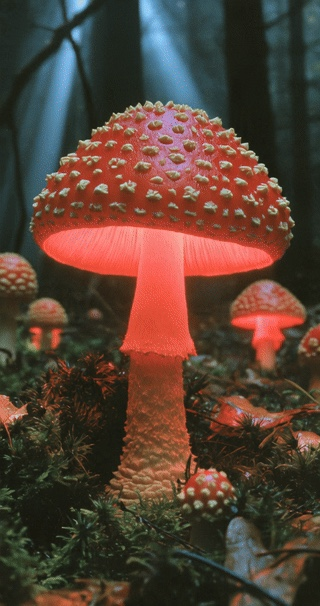

Carnet de terrain
Champi
Une clé simple pour explorer les champignons à lames, directement sur le terrain.
Commencer l'identification
Reprendre l'identification en cours
Clé des champignons à lames
0%